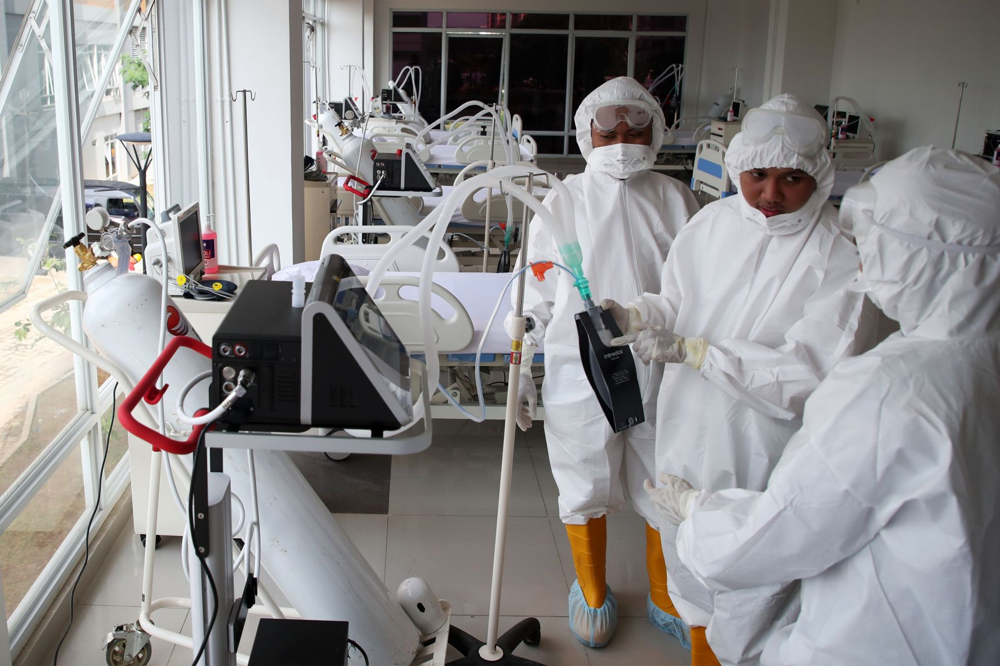

>
>
Berikut 4 Pertolongan Pertama Serangan Stroke
Stroke

Stroke merupakan kondisi darurat medis yang memerlukan pertolongan dengan cepat dan tepat.
Penanganan yang terlambat dan keliru bisa menyebabkan kecacatan jangka panjang hingga mengancam nyawa.
Itu sebabnya, kita perlu memahami langkah-langkah apa saja yang harus dilakukan ketika ada seseorang, khususnya orang tersayang, yang mengalami serangan stroke.
Semua itu sangat penting untuk menyelamatkan hidup mereka. Pasalnya, setiap langkah yang kita lakukan saat masa kritis itu tiba sangat menentukan kelangsungan hidup mereka.
Praktisi perawat dari Comprehensive Stroke Center di Penn Medicine, Jean D.Luciano, mengatakan, ada beberapa hal penting yang perlu kita lakukan untuk memberikan peluang terbaik saat melihat seseorang mengalami serangan stroke.
"Stroke terjadi ketika suplai darah ke otak terhambat sehingga fungsi tubuh terganggu," ucap Luciano.
Semakin lama penanganan, kata Luciani, semakin banyak pula peluar krusakan otak yang bisa terjadi.
Untuk mencegah hal itu terjadi, kia bisa melakukan langkah berikut:
1. Panggil pertolongan medis
Jika kita tidak tahu apa yang harus dilakukan, segera panggil ambulan atau pertolongan medis. Menurut Luciano, gejala stroke memang sulit terdeteksi. Namun bila menemukan orang sekitar kita tiba-tiba mengalami serangan stroke, ia menyarankan kita untuk menghubungi nomor darurat medis. "Saat menelepon, kata kepada petugas jika orang tersebut mengalami gejala stroke," ucap dia. Di Indonesia, nomor darurat untuk ambulan atau pertolongan medis adalah 118 dan 119.
2. Lakukan resusitasi kardiopulmoner (CPR)
Sebenarnya, sebagian besar pasien stroke tidak memerlukan CPR. Namun, jika orang yang mengalami serangan stroke tidak sadarkan diri, sebaiknya periksa denyut nadi dan pernapasannya. Jika denyut nadi dan pernapasan tidak terasa, segera lakukan CPR. CPR bisa dilakkan dengan membaringkan pasien ke permukana yang keras. Setelah itu, tekan bagian tengah dada dengan kecepatan satu hingga dua tekanan per detik. akukan sebanyak 30 atau sekitar200 kali per menit. Setelah itu, epriksa apakah tanda-tanda nadi dapernapsan sudah terasa. Jika blum terbiasa melakuka CPR, kita bisa memint apetugas medis untuk memandu kita lakukannya melalui telepon.
3. Hindari memberikan obat atau makanan
Ada dua jenis stroke yang sering terjadi, takni stroke hemoragik dan stroke iskemik. Stroke hemoragik terjadi karena pembuluh darah yang pecah. Sedangkan Stroke iskemik terjadi karena adanya pembekuan di pembuluh darah. "Stroke iskemik lebih sering terjadi daripada hemoragik. Sedangkan kita tidak bisa membedakannya sampai ada diagnosa medis," ucap Luciano. Untuk keamanan, jangan berikanobat atau makanan apapun kepada seseorang yang mengalami serangan stroke. Karena seringkali stroke juga memengaruhi kemampuan seseorang untuk menelan.
4. Pahami gejalanya
Mengenali tanda-tanda stroke merupakan komponen penting mengatasi situasi darurat akibat serangan stroke. Beberapa gejala bisa saja terlihat tak jelas. Namun, ada pula yang bisa kita amati dengan jelas. Berikut berbagai gejala stroke:
- kelumpuhan di satu sisi wajah atau tubuh
- penglihatan kabur atau menghilang tiba-tiba
- kesulitan berbicara
- kesulitan menelan
- mual
- kehilangan keseimbangan
- sakit kepala mendadak
- kebingungan
- hilang kesadaran
- pusing.